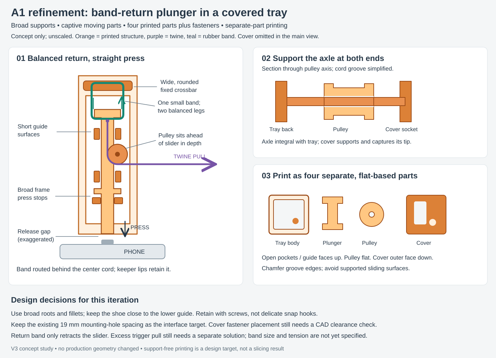

The preferred refinement uses a rigid tray and cover to capture the plunger and support the pulley axle at both ends. A single rubber band loops around broad fixed and moving shoulders, with two balanced legs to reduce twisting. Keep its tension only as high as needed to return the mechanism reliably.
Print the four parts separately, with open pockets upward and sliding surfaces free of support contact. Use generous roots, chamfers and fillets; place the button contact close to the lower guide. Attach the cover with printed screws rather than thin snap hooks. Reuse the successful 8×3 fastener geometry if it fits; screw count and placement remain open until packaging is checked.
The current V3 interface is two 8.8 mm holes, 19 mm apart. Preserve that as a starting target, then check both actuator sides, phone clearance and rail screw removal. The illustrated pulley/cord sits ahead of the slider in depth, so its residual offset moment also needs checking.
A return stop establishes the released position; broad press shoulders land on the frame to limit button travel. A small return band does not accommodate ongoing trigger pull after that stop. That input travel needs its own design. These are unscaled evaluation sketches, not CAD or verified support-free print files.